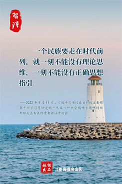

树立和践行正确政绩观，起决定性作用的是党性。只有党性坚强、摒弃私心杂念，才能保证政绩观念不出偏差。中共党人必须牢记，为民造福是最大政绩。
-—2022年3月1日，习近平总书记在中夹党校（国家行政学院）中青年千部培训班开班式上发表重要讲话强调
尊重和保障人权是中国共产党人的不懈追求。党的百年奋斗史，贯穿着党团结带领人民为争取人权、尊重人权、保障人权、发展人权而进行的不懈努力。
——2022年2月25日，习近平总书记在中共中央政治局第三十七次集体学习时强调
壬寅虎年,我们要以虎虎生威的雄风、生龙活虎的千劲、气吞万里如虎的精神，继续书写中国特色社会主义伟大事业的历史新篇章！
——2022年1月30日，习近平总书记在2022年春节团拜会上发表的重要讲话中指出

一个民族要走在时代前列，就一刻不能没有理论思维，一刻不能没有正确思想指引。
-—2022年3月1日，习近平总书记在中夹党校（国家行政学院）中青年千部培训班开班式上发表重要讲话强调